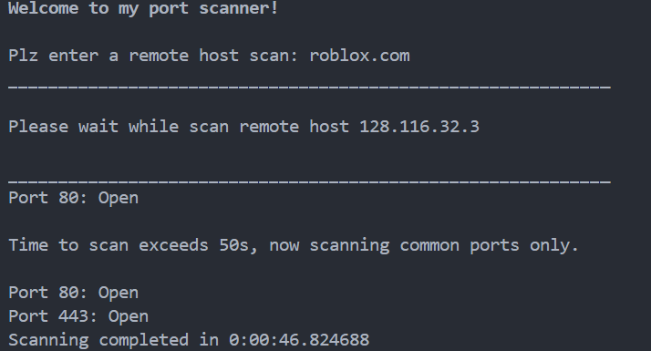

I am a cybersecurity-focused CS/Media student passionate about building equitable and impactful solutions in tech. With a keen eye for detail and a passion for following my intellectual curiosity. A great strength of mine lies in my ability to ask the right questions to solve complex problems.
Beyond my studies I also enjoy things like playing the classical guitar, watching movies, gyming, and language learning.
Im involved in CS research related to frauds and scams. Investiagting how people interact with LLMs like ChatGPT, and what they except such tools to provide for them (HCI). I've worked on qualitative coding in UChicago's SUPER security lab, similarly exploring topics of ethics and faireness in AI regarding data science practitioners and statisticians.
I've started on a handful of cyber security scripts/programs like local based port scanners. Check out my github for more.
I use sources like tryhackme and hackthebox to brush up on fundamental computer security related topics. They both offer a variety of labs to practice using Kali Linux, Web exploitation, DNS attacks, reconnaisance, and networking fundamentals with firewall sims.